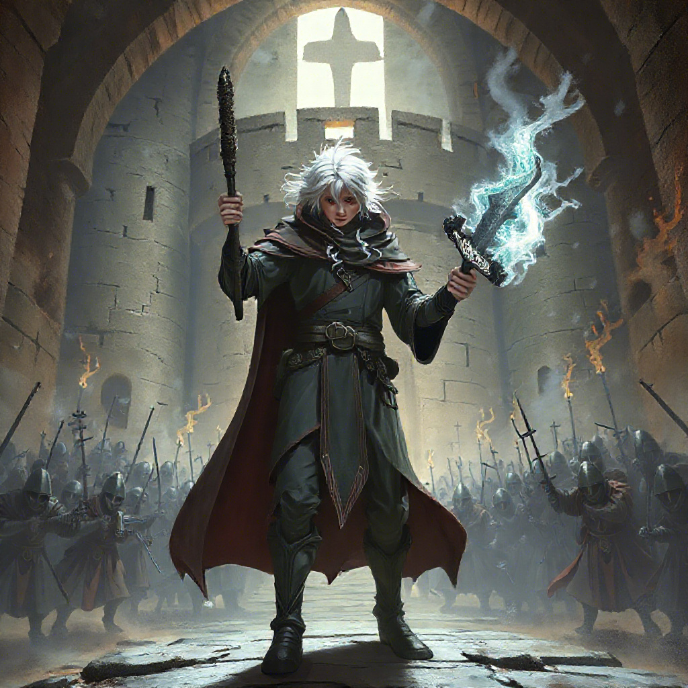

Boris finalmente conseguiu entrar no castelo, mas ao virar um corredor, deparou-se com um vasto salão repleto de guardas armados. A tensão no ar era palpável, e Boris sabia que precisava agir rapidamente para sobreviver e completar sua missão.
Boris pode optar por lançar um feitiço de invisibilidade, escondendo-se dos guardas e tentando passar despercebido por eles. Esse feitiço exige uma grande quantidade de energia mágica e poderá afetar no seu futuro, mas oferece a chance de chegar até o rei sem enfrentar os guardas diretamente.
Em vez de se esconder, Boris pode escolher enfrentar o exército de guardas com um feitiço explosivo poderoso. Este ataque criará uma grande distração, mas também pode atrair ainda mais inimigos para sua posição.